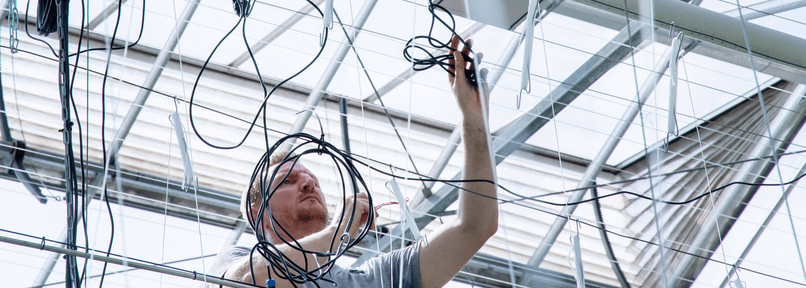

人工智能
栗子公司运用各种不同的科技资产，包括强大的计算能力、丰富的数据资料及多元的使用场景，致力提升人工智能的理解、决策及创新能力，把人工智能的科研硕果惠及人类和世界。

前沿科技
栗子科技已建立创新科技为基础的研发矩阵，打造面向未来的科技引擎，让技术创新惠及消费者，并在农业、工业、零售到医疗等多行业实现。

未来探索
栗子公司致力营造更有活力的自然生态环境。我们与合作伙伴一起探索未来，努力发展新技术，务求克服有关粮食、能源及水资源管理等全球关键问题。目前，我们与瓦格宁根大学合作，研究以人工智能及智慧温室改善农产的方法，缓解粮食短缺的问题。
